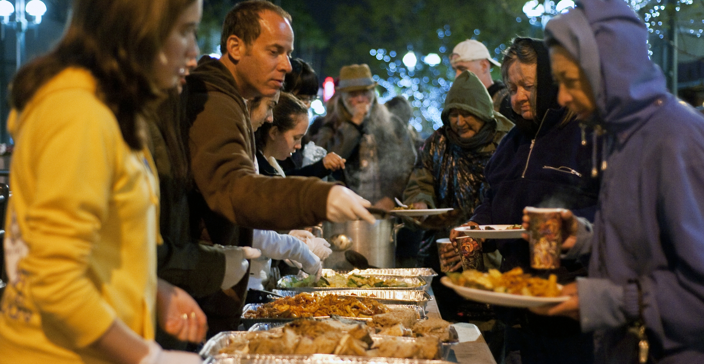
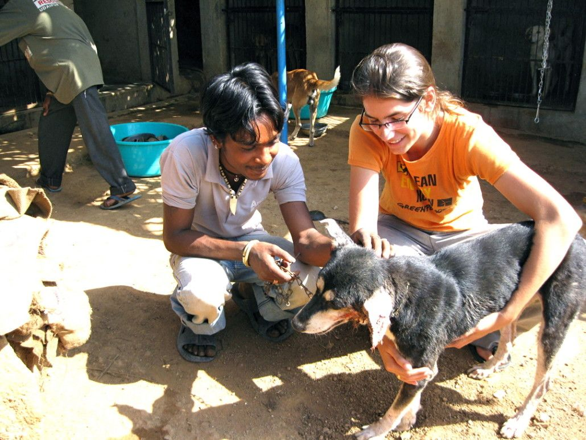

Want to donate to NGOs but don't know how? Want to be a part of something bigger? Are you an NGO looking for ways to acquire funds for your current campaigns?
Worry not because you’ve come to the right place!!!
We are a group of enthusiastic people working towards making the world a better and easier place for everyone. We at QuickDonate help users donate any sum of money to the trusted NGOs listed under us. As an NGO, you can sign up under us to receive donations from users.
Our Previous Campaigns
2019- Food for homeless campaign
With the help of donations raised by QuickDonate the MahilaSev organisation was able to provide food for around 500 homeless people

2021 Animal Care
Plenty of volunteers signed up through QuickDonate to help Animal Centre vaccinate and sterilise dogs and cats in the streets of Mangalore.
